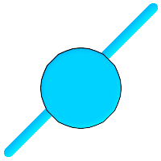
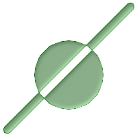
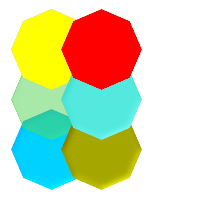
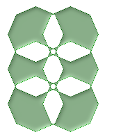

名前
ST_MakeValid — 頂点を失うことなしに不正なジオメトリを妥当なジオメトリにしようと試みます。
概要
geometry ST_MakeValid(geometry input);
説明
入力頂点を失うことなしに、与えられた不正なジオメトリの妥当な表現を生成しようと試みます。既に妥当であるジオメトリは、さらなる操作を行わずに返ります。
対応する入力はPOINTS, MULTIPOINTS, LINESTRING, MULTILINESTRING, POLYGON, MULTIPOLYGON, GEOMETRYCOLLECTIONおよびそれらの混交したものです。
全部また部分的に次元減少が発生した場合には、出力ジオメトリが低い次元のジオメトリまたは元の次元以下の次元のコレクションになります。
単一ポリゴンは、自己インタセクトがある場合には、マルチポリゴンになります。
GEOSモジュールで実現しています。
Availability: 2.0.0
Enhanced: 2.0.1 速度の改善
Enhanced: 2.1.0 GEOMETRYCOLLECTIONとMULTIPOINTの対応の追加
Enhanced: 3.1.0 NaN値を持つ座標の削除が追加されました。
 This function supports 3d and will not drop the z-index.
This function supports 3d and will not drop the z-index.
例
 before_geom: 二つのオーバラップしているポリゴンからなるマルチポリゴン
 after_geom: 4 つのオーバーラップしないポリゴンのマルチポリゴン
SELECT f.geom AS before_geom, ST_MakeValid( f.geom) AS after_geom FROM (SELECT 'MULTIPOLYGON(((186 194,187 194,188 195,189 195,190 195, 191 195,192 195,193 194,194 194,194 193,195 192,195 191, 195 190,195 189,195 188,194 187,194 186,14 6,13 6,12 5,11 5, 10 5,9 5,8 5,7 6,6 6,6 7,5 8,5 9,5 10,5 11,5 12,6 13,6 14,186 194)), ((150 90,149 80,146 71,142 62,135 55,128 48,119 44,110 41,100 40, 90 41,81 44,72 48,65 55,58 62,54 71,51 80,50 90,51 100, 54 109,58 118,65 125,72 132,81 136,90 139,100 140,110 139, 119 136,128 132,135 125,142 118,146 109,149 100,150 90)))'::geometry AS geom) AS f;
|
 before_geom: 六つのオーバラップしているポリゴンからなるマルチポリゴン
 after_geom: 14個のオーバラップしていないポリゴンからなるマルチポリゴン
SELECT c.geom AS before_geom, ST_MakeValid(c.geom) AS after_geom
FROM (SELECT 'MULTIPOLYGON(((91 50,79 22,51 10,23 22,11 50,23 78,51 90,79 78,91 50)),
((91 100,79 72,51 60,23 72,11 100,23 128,51 140,79 128,91 100)),
((91 150,79 122,51 110,23 122,11 150,23 178,51 190,79 178,91 150)),
((141 50,129 22,101 10,73 22,61 50,73 78,101 90,129 78,141 50)),
((141 100,129 72,101 60,73 72,61 100,73 128,101 140,129 128,141 100)),
((141 150,129 122,101 110,73 122,61 150,73 178,101 190,129 178,141 150)))'::geometry AS geom) AS c;
|